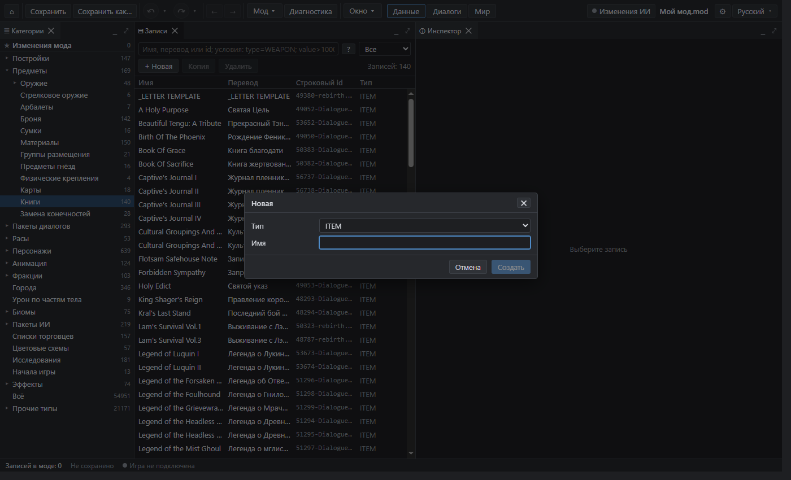
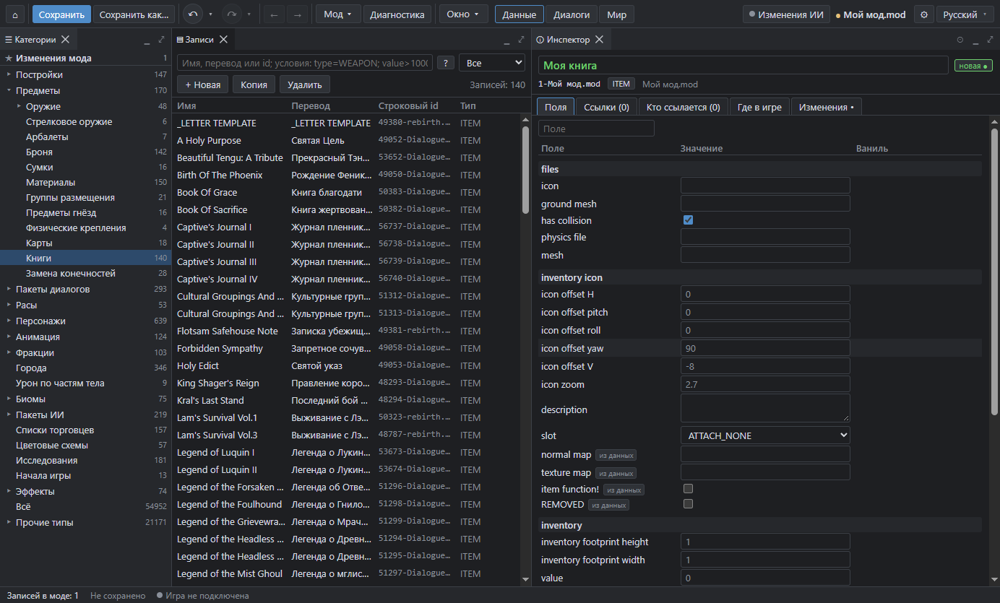
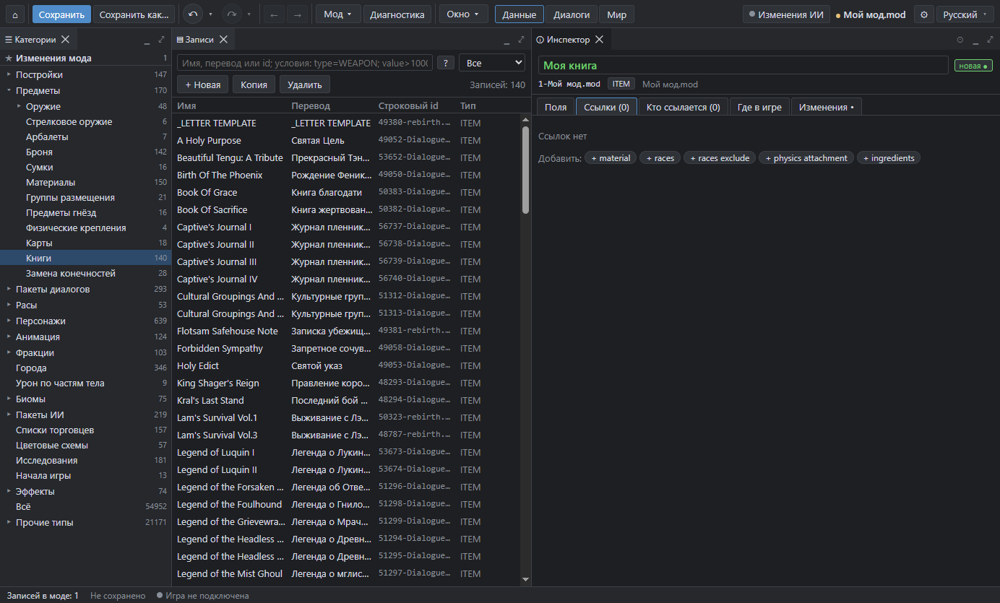
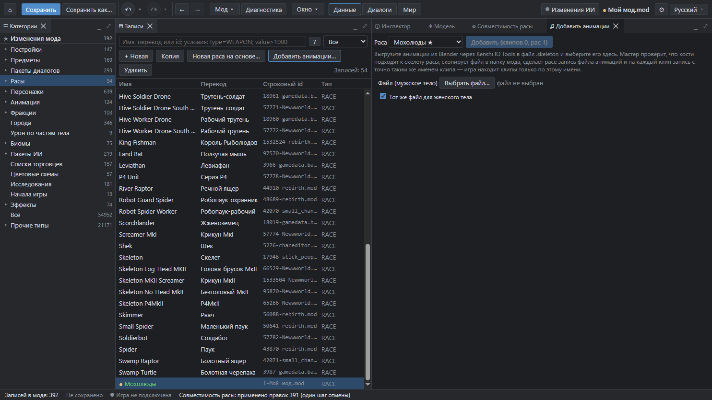
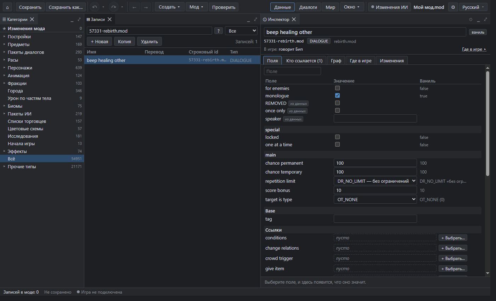
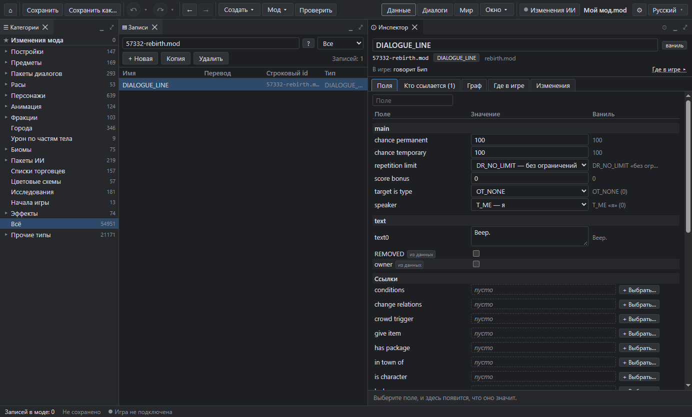
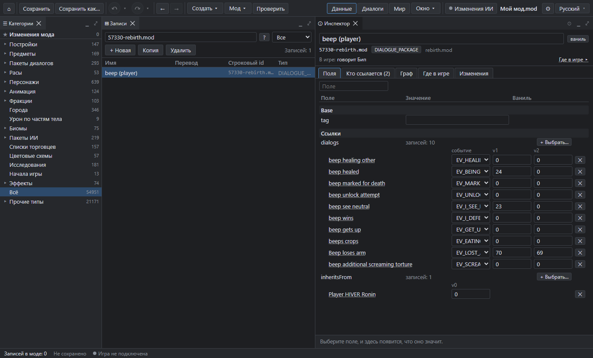
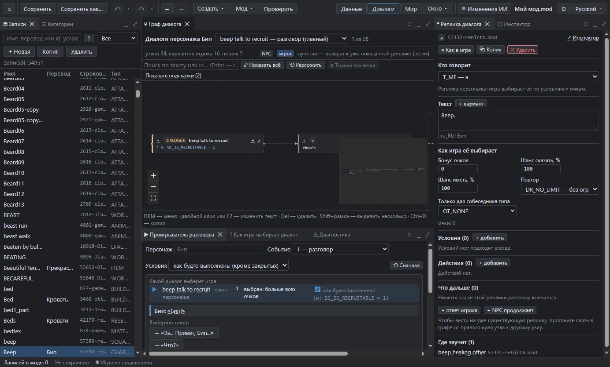

Шесть экранов. Главный — A: инспектор любой записи (на примере книги), это касается всех типов. B–D — про расы, E — меню, F — когда звучит диалог. Кнопки «До» — настоящие снимки (русский интерфейс), «После» — как предлагается
(рисунок, не код). Переключатель над каждым экраном. Под ним — что мешает сейчас и что меняется.
Жёлтые выноски отмечают новое.
Ориентир — простота FCS при открытии: слева типы, посередине записи, справа поля. Этот путь
всегда виден и ничем не загорожен. Поиск, ссылки, карточки и мастера Cactus ему помогают и
не встают поперёк. Полный разбор: docs/ui-review-2026-11.md, правила —
docs/ui-principles.md.
A. Любая запись (пример: новая книга): что значит поле и как попасть в игру
Главный экран для всех типов, не только рас. Простоту берём у FCS: поля и ссылки на одной вкладке, описание
выделенного поля всегда внизу. От Cactus остаются поиск, «Где в игре» и подсказка, что делать дальше.



Сейчас
«+ Новая» в «Книгах» создаёт не книгу: item function пустой, запись пропадает из списка книг, все поля пустые (нет модели, иконки, цены).
Что делает поле, видно только во всплывающей подсказке. В FCS описание выделенного поля всегда внизу окна.
Ссылки — отдельная вкладка с кнопками «+ races», «+ material» без объяснений: непонятно, при чём расы к книге.
«Где в игре»: «нет восходящих связей» — и всё. Как сделать, чтобы предмет появился, не сказано.
После
«+ Новая» в категории создаёт запись этой категории (книга остаётся книгой) и предлагает образец: модель, иконка, цена берутся из него.
Поля и ссылки на одной вкладке, как в FCS. У каждого поля имя игры и русское название; внизу — описание выделенного поля.
Пустая ссылка объясняет, что значит пусто: «races — кто может носить; пусто — все».
Строка «В игре: пока нигде» над полями и вкладка «Где в игре» со способами попасть в игру и примером образца. Работает для любого типа.
B. Главное окно, выбрана своя раса
Расовые кнопки уходят из списка в карточку расы. Всё, что с расой сделано и что осталось, видно сразу в инспекторе.
Справа две вкладки: Инспектор и Модель. Колонка «Тип» говорит «Раса» (код — в подсказке).
C. Мастерская расы: шаг «Анимации», модель рядом
Вместо отдельных вкладок «Совместимость расы», «Добавить анимации» и «Модель» — одна вкладка: шаги слева, модель расы справа. Выбранная анимация сразу играет.

Свои анимации для «Мохолюды»
Выберите файл .skeleton с анимациями из Blender.Выбрать файл .skeleton…Как выгрузить анимации из Blender? ▸
Пустое состояние: одна фраза и одна кнопка. Абзац про Kenshi IO Tools — под «Как выгрузить…». Неактивной кнопки «Добавить (клипов 0)» нет.
Можно пропустить: без своих анимаций раса двигается как Зеленоземец.
← СовместимостьПропуститьПроверка →
${WS_MODEL}
Свои анимации для «Мохолюды»
Файл:moss_anims.skeleton— 3 анимацииДругой файл…✓ Кости подходят к скелету расы
Анимация в файлеДлинаЧто будет в игре
▶ moss_idle_sway2,4 сновая
moss_walk_heavy1,1 сновая
sit_ground3,0 сзаменит анимацию «sit_ground» у этой расы
Щелчок по строке — анимация играет в модели справа. Не нужно «Показать в «Модели»».
Файл ляжет в папку мода: mods/Мой мод/anims/moss_anims.skeleton · Как это работает? ▸
«Совместимость расы…» здесь больше нет: она живёт в карточке расы и в мастерской.
Новая запись…Ctrl+N
Новая раса на основе…
Новый предмет на основе…скоро
Своё существо…скоро
О моде…
Зависимости (3)…
Копии…
Опубликовать…
Мод ▾ — без «Новой расы»: создание записей переехало в «Создать ▾».
Создать ▾. Будущие мастера («Новый предмет на основе…», «Своё существо») встают сюда же — правило из ui-principles.md.
Записей в моде: 0Не сохранено● Игра не подключена
Сейчас
«Совместимость расы…» в шапке «Массовых правок» — даже при правке катан.
«Новая раса на основе…» в меню «Мод», рядом с «Зависимостями» и «Копиями».
В «Окне» 26 пунктов, среди них мастера и заглушки «Сцена», «Компоненты».
После
«Создать ▾»: новая запись и мастера «… на основе». «Мод ▾»: только свойства мода.
«Массовые правки» без чужих кнопок. Мультивыбор и «Массовая правка (3)» — как сейчас (это хорошо).
В «Окне» только панели; заглушки скрыты.
F. Диалог: когда он звучит и как сделать такой же
Игра знает, когда звучит диалог: по событию в пакете диалогов («закончил лечить», «кислотный дождь», «отрубили руку»).
В Cactus событие видно только в пакете, голым кодом. У диалога и реплики его нет совсем, поэтому «условий 0» выглядит
как «звучит всегда» или «непонятно когда». Модель: событие → у кого → условия → очки → реплики. Пример — Бип и «beep healing other».




Сейчас
У диалога и реплики «В игре: говорит Бип» — но не сказано, когда. Событие видно только в пакете: обрезанный список EV_HEALI….
Названия переведены у 16 событий из 76. Описания из fcs_enums.def (кто «собеседник», «игра не вызывает») нигде не показаны.
У прочих ссылок числа подписаны «v0 v1 v2», хотя в fcs.def у ~100 ссылок сказано, что они значат (мин./макс., шанс, приоритет).
Второе и третье число у ссылки dialogs — голые числа, хотя в данных это тоже события (у «Beep loses arm»: 71, 70, 69).
Реплика называется «DIALOGUE_LINE», «Где звучит» показывает только родителя.
Как сделать свой диалог на событие, не сказано: нужно вручную создать DIALOGUE, DIALOGUE_LINE, найти пакет и вписать число события.
После
В шапке диалога и реплики строка «Звучит, когда: закончил лечить другого · у Бип · через пакет «beep (player)»». Клик ведёт в пакет.
Все 76 событий с переводом и пояснением на en/ru/zh; оригинальное имя и число остаются рядом: «Кислотный дождь · EV_ACID_RAIN (62)». Поиск — по переводу, EV-имени и числу. Голых чисел событий нигде нет.
У прочих ссылок числа подписаны по fcs.def: «мин., макс.», «приоритет», «шанс».
Мастер «Диалог на событие» с нуля: событие → у кого → реплики. Cactus сам делает диалог, реплики и ссылку в пакете с нужным числом, одна отмена. Копировать образец — второй путь.
«Все диалоги на событие» — образцы из игры: открыть, скопировать, посмотреть условия.
«Условий 0» объяснено: «звучит каждый раз, когда случилось событие, если очки выше других».
Порядок работ, если макет подходит
Инспектор любой записи (экран A): поля и ссылки на одной вкладке, русское название рядом с именем поля, описание выделенного поля внизу, пустая ссылка объясняет «пусто». (первый шаг)
«+ Новая» знает категорию и предлагает образец (экран A, «После: + Новая»). Сейчас новая запись в «Книгах» — не книга.
Строка «В игре» и вкладка «Где в игре» со способами попасть в игру и примером образца (экран A).
Мастерская расы и «уже применено» в совместимости (экраны C, D; для D нужна правка ядра).
Пустые состояния, слова, мелочи панели.
Диалог: когда звучит (экран F): 7a — проверить по exe, события ли второе и третье число у dialogs, и поправить ядро;
7b — все 76 событий на en/ru/zh с пояснением, EV-имя и число рядом («Кислотный дождь · EV_ACID_RAIN (62)»), поиск по всему этому, строка «Звучит, когда»;
7b′ — подписи прочих чисел у ссылок по fcs.def («мин., макс.», «приоритет»); 7c — мастер «Диалог на событие» с нуля (событие → у кого → реплики), «Ещё такой же» открывает его по образцу;
7d — «Все диалоги на событие»; 7e — убрать второй граф: вкладки «Граф» в инспекторе нет, когда центральный «Граф диалога» показывает ту же запись. 7a, 7b, 7b′ и 7e не зависят от шагов 5–6.
Каждый шаг — отдельный коммит с npm test, e2e и новым снимком scripts/ux-shots.ts.